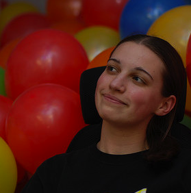
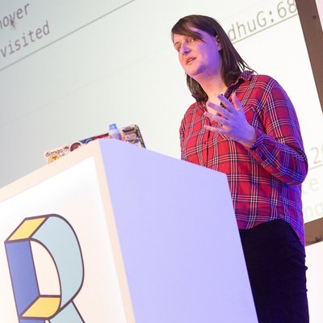

"K" Track
"T" Track
Katie CunninghamAccessibility: Myths and Delusions |
Katie McLaughlinBuild a Better Hat Rack: All Contributions Welcome |
|  |
Katie BellRapid prototyping with teenagers |


|
Katie Kurkoski0 to Nodebots in 45 minutes |
Katherine "kf" FellowsClojureBridge in Practice |
Katherine DanielsWe are all DevOps |
Caitlin SteinertDesigning with C.R.A.P. |
Katerina MarchánA Parser for Things is a Function from Strings to Lists of Pairs of Things and Strings |
Catherine HollowayData mining robots: using Seaborn and pandas with the Robot Operating System |
Katie GenglerEmber's Addon Community |
Katie MackAre we alone? Alien lifeforms |
|  |
Katie FennChrome DevTools: Inside Out |
Katy MoeAPIs for Cyborgs |
Kathryn KillebrewTorque Time Lapse Map Animations Outside of CartoDB |
Kathleen DanielsonAvoiding Burnout and Other Essentials of Open Source Self Care |
Katie ConfortiHow to get the high fives you deserve |
Kat SweetI Amateur Radio (And So Can You!) |

|
Katrina ClokieTesting Web Services, Microservices and APIs |
Katie KowalskyWorking with CartoCSS |
Kathryn ReeveJavaScript traps and how to avoid them |
Kate AndrewsMaking content accessible |
Katie Stockton RobertsMigrating from Legacy Platforms to NodeJS |
Caitlin EnglotTurn off your awkward meter |
Kitt HodsdenAutomate Your Site's Front-End Performance |
Kat FangZero to App: Develop with Firebase |
Katie McCorkellCode Poet |
Katharine JarmulHow to Deal with Imperfect, Unclean Datasets |